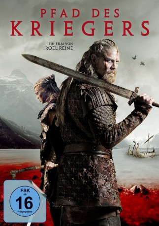

#9604 Pfad des Kriegers
 
 IMDB-Wertung: 5.4 / 10
IMDB-Wertung: 5.4 / 10  Metascore: 0
Metascore: 0 
Europa, 8. Jahrhundert: Das großfriesische Reich wird von der fränkischen Armee angegriffen, die strategisch wichtige Handelssiedlung Dorestad wird eingenommen. Der friesische Königssohn Radbod, der die Stadt verteidigte, wird auf einem Floß gefesselt und seinem Schicksal auf hoher See überlassen. Allerdings überlebt Radbod den sicher geglaubten Tod und strandet an der Küste Dänemarks, wo er von einem Wikinger-Clan aufgenommen wird. Nach vielen Jahren kehrt er in seine Heimat zurück mit einem verwegenen Plan: Gemeinsam mit einer schlagkräftigen Wikinger-Truppe will der Freiheitskämpfer die Friesen einigen und eine alles entscheidende Schlacht gegen die fränkischen Besatzer anzetteln…
Jahr: 2018
Dauer: 160 Minuten
FSK: 16
Land: Niederlande Studio: Redbad Distributie Film CVTonspuren:
Untertitel: Deutsch,
Auflösung: 1080p (1920x804) Größe: 5662 MB
Genre: Abenteuer
Regisseur: Roel Reiné
Drehbuch: Alex van Galen
Soundtrack: Trevor Morris
Darsteller:
 Jonathan Banks als Pepijn
Jonathan Banks als Pepijn- Renée Soutendijk als Idwina
- Loes Haverkort als Frea
 Søren Malling als Wiglek
Søren Malling als Wiglek- Gijs Naber als Redbad
 Derek de Lint als Eibert
Derek de Lint als Eibert- Huub Stapel als Aldigisl
- Lisa Smit als Fenne
- Egbert Jan Weeber als Bonifatius
- Britte Lagcher als Sinde
- Adam Ild Rohweder als Kendryck
- Camilla Gottlieb als Kendrycks wife
- Tibo Vandenborre als Charles Martel
- Daphne Wellens als Trude
- Pieter Embrechts als General Focard
- Joe Lewis als Bonifatius
- Flor Decleir als Frisian Peasant
- Peter Faber als Sibod
- Jack Wouterse als Willibrord
- Mark van Eeuwen als Wulf
- Birgit Schuurman als Healer
- Teun Kuilboer als Jurre
- Aus Greidanus als Odulf
- Ron de Groen als Frankish Soldier
- Martijn Fischer als Gebbe
- Eva Heijnen als Sinde's Maid Servant
- Morten Rose als Gund
- Mike Weerts als Scout
- Marieke Heebink als Alemke
- Katrine Fabricius als Danish Girl
- Robbert Blokland als Frisian Warrior
- Sjoerd van Boekhold als Fighting Blacksmith
- Allard Geerlings als Frankish Officer (uncredited)
- Riza Olcay als Frankish Soldier (uncredited)
- Tina Haahr Planitzer als Danish Warrior (uncredited)
- Robby Prinsen als Frisian Warrior (uncredited)
- Anne Teune als Franken woman (crowd) (uncredited)
- Vincent Tijbout als Frissian Warrior (uncredited)
- Zicarlo van Aalderen als Frankish Soldier (uncredited)
- Jeroen van Doornik als Frankish Soldier (uncredited)
Datei: X:\2018(N-Z)\Pfad des Kriegers (2018, FSK16, 1920x804).mkv seit 18.09.2018
Festplatte: HD 2018(G-Z)-2019(A-Z)
 Es gibt insgesamt 172 Filme in der Gruppe '2018(N-Z)'
Es gibt insgesamt 172 Filme in der Gruppe '2018(N-Z)'